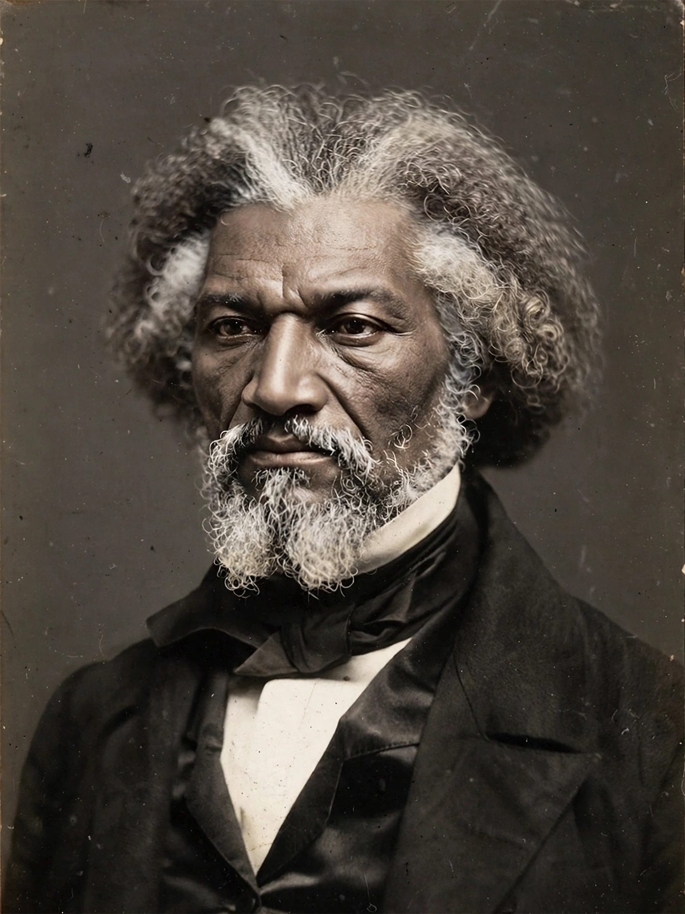

| Born | Frederick Augustus Washington Bailey, c. February 1817/1818, Talbot County, Maryland, U.S. |
|---|---|
| Died | February 20, 1895 (aged 77–78), Washington, D.C., U.S. |
| Occupation | Abolitionist, orator, writer, statesman |
| Notable work | Narrative of the Life of Frederick Douglass, an American Slave (1845) |
| Spouses | Anna Murray (m. 1838; died 1882); Helen Pitts (m. 1884) |
Frederick Douglass (born Frederick Augustus Washington Bailey, c. February 1817 or 1818 – February 20, 1895) was an American social reformer, abolitionist, orator, writer, and statesman. After escaping from slavery in Maryland at age 20, he became a national leader of the abolitionist movement in Massachusetts and New York, famous for his oratory and incisive antislavery writings. He wrote several autobiographies, vividly describing his experiences as an enslaved person; his first, Narrative of the Life of Frederick Douglass, an American Slave (1845), became a bestseller and was influential in promoting the cause of abolition.
Douglass was born into slavery on Maryland's Eastern Shore and separated from his mother in infancy. Living in Baltimore as a house servant, he was taught the alphabet by Sophia Auld, the wife of his enslaver, before her husband forbade it; Douglass thereafter taught himself to read in secret, understanding literacy as "the pathway from slavery to freedom". At 16, hired out to farmer Edward Covey, a notorious "slave-breaker", Douglass fought back against a beating — a turning point he later described as resurrecting his sense of manhood.
In September 1838 Douglass escaped by train and steamboat to New York City, with the help of Anna Murray, a free Black woman he then married. Settling in New Bedford, Massachusetts, he adopted the surname Douglass and began speaking for the Massachusetts Anti-Slavery Society after an impromptu speech at Nantucket in 1841 impressed William Lloyd Garrison. To answer skeptics who doubted a former slave could speak so well, he published his Narrative in 1845, then spent two years lecturing in Ireland and Britain, where supporters raised funds to purchase his legal freedom.
Douglass founded and edited the abolitionist newspaper The North Star from Rochester, New York, supported women's suffrage, recruited Black soldiers for the Union Army during the Civil War, and held a succession of federal posts, including Marshal of the District of Columbia, Recorder of Deeds, and U.S. minister resident to Haiti. His later autobiographies, My Bondage and My Freedom (1855) and Life and Times of Frederick Douglass (1881, revised 1892), expanded his account. He died in Washington, D.C., in 1895 and is buried in Rochester's Mount Hope Cemetery.
Douglass was the most photographed American of the 19th century, sitting for some 160 portraits, and his works remain central to American literature and political thought. His Fourth of July oration of 1852, "What to the Slave Is the Fourth of July?", is among the most celebrated speeches in American history.